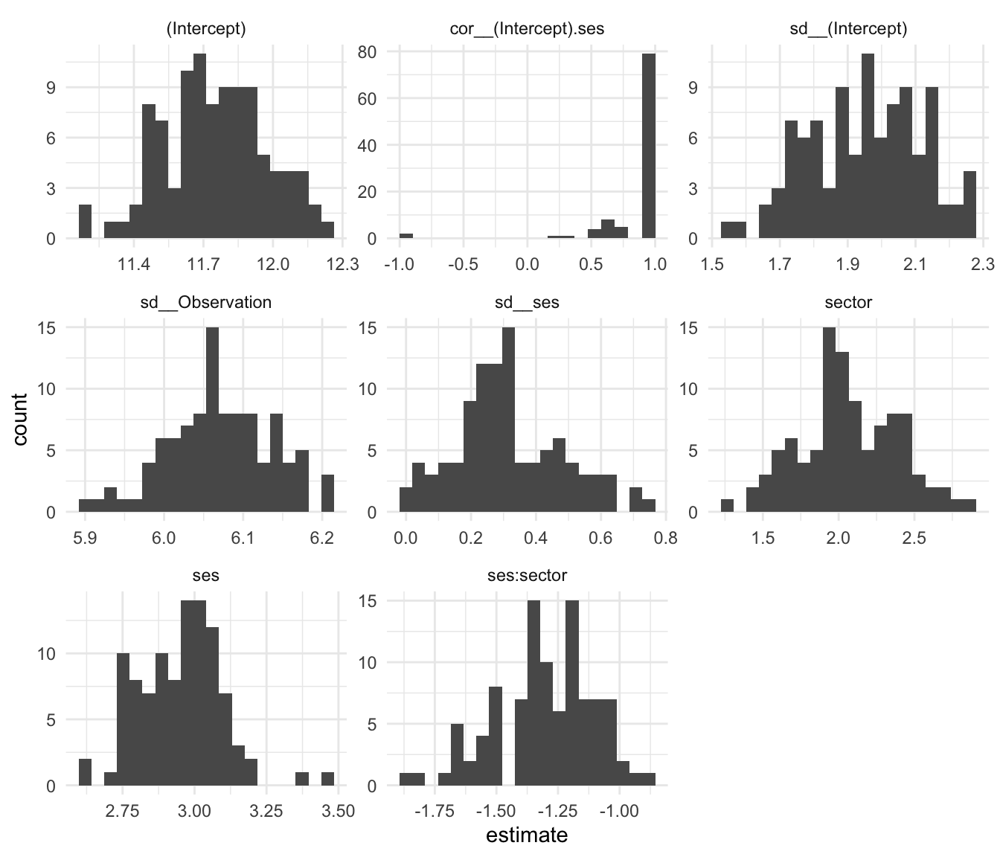

M = lmer( mathach ~ 1 + ses*sector + (1+ses|id),
data = dat )Warning in checkConv(attr(opt, "derivs"), opt$par, ctrl = control$checkConv, :
Model failed to converge with max|grad| = 0.00578927 (tol = 0.002, component 1)Sometimes, despite your best efforts, you get convergence issues and 0 estimates for your random effects. When this happens, one way to assess uncertainty is to use a bootstrap. The idea of the bootstrap is to resample your data and see how your estimates vary with each resample. Even if many of your estimates trigger warnings, you will get a good sense of how variable your estimates may be given the structure of your data. In other words, the bootstrap takes the uncertainty of convergence issues and warnings into account!
We illustrate using the High School & Beyond data. Note this specification generates a warning and also has a 1 for our correlation of random slope and intercept. Let’s say we are stuck on this and don’t know what to do next.
M = lmer( mathach ~ 1 + ses*sector + (1+ses|id),
data = dat )Warning in checkConv(attr(opt, "derivs"), opt$par, ctrl = control$checkConv, :
Model failed to converge with max|grad| = 0.00578927 (tol = 0.002, component 1)Well, at least we can look at our estimates:
arm::display( M )lmer(formula = mathach ~ 1 + ses * sector + (1 + ses | id), data = dat)
coef.est coef.se
(Intercept) 11.75 0.23
ses 2.96 0.14
sector 2.13 0.35
ses:sector -1.31 0.22
Error terms:
Groups Name Std.Dev. Corr
id (Intercept) 1.95
ses 0.28 1.00
Residual 6.07
---
number of obs: 7185, groups: id, 160
AIC = 46585.1, DIC = 46557
deviance = 46563.2 Given our warnings, we don’t know if we can trust these standard errors, however. We can use the bootstrap to try and improve them.
To bootstrap, we resample entire schools (the clusters) with replacement from our data. If we sample the same school multiple times, we pretend each time is a different school that just happens to look the exact same. It turns out that this kind of resampling captures the variation inherent in our original data.
First, as an aside, let’s summarize our model with tidy(), which will help do inference later:
library(broom)
ests <- tidy( M )
ests# A tibble: 8 × 6
effect group term estimate std.error statistic
<chr> <chr> <chr> <dbl> <dbl> <dbl>
1 fixed <NA> (Intercept) 11.8 0.232 50.7
2 fixed <NA> ses 2.96 0.143 20.7
3 fixed <NA> sector 2.13 0.346 6.16
4 fixed <NA> ses:sector -1.31 0.216 -6.09
5 ran_pars id sd__(Intercept) 1.95 NA NA
6 ran_pars id cor__(Intercept).ses 1.00 NA NA
7 ran_pars id sd__ses 0.275 NA NA
8 ran_pars Residual sd__Observation 6.07 NA NA We see our estimates for all our parameters, including variance. We only have SEs for our fixed effects, and we are nervous about all the SEs due to our warnings when we fit the lmer command. Again, bootstrap will help.
To bootstrap we need to sample our clusters with replacement, making a new dataset like the old one, but with a random set of clusters. We want the same number of clusters, so we will end up with some clusters multiple times, and some not at all.
To see bootstrapping in action, we first look at a toy example of 5 tiny clusters:
set.seed( 40404 )
toy = tibble( id = rep(c("A","B","C","D","E"), c(1,2,3,1,1)),
y = 1:8 )
toy# A tibble: 8 × 2
id y
<chr> <int>
1 A 1
2 B 2
3 B 3
4 C 4
5 C 5
6 C 6
7 D 7
8 E 8Let’s take a single bootstrap sample of it:
tt <- toy %>%
group_by( id ) %>%
nest() %>%
ungroup()
t_star = sample_n( tt, 5, replace=TRUE )
t_star$new_id = 1:nrow(t_star)
new_dat <- unnest(t_star, cols=data)
new_dat# A tibble: 8 × 3
id y new_id
<chr> <int> <int>
1 B 2 1
2 B 3 1
3 E 8 2
4 D 7 3
5 B 2 4
6 B 3 4
7 B 2 5
8 B 3 5This code is technical (and annoying) but it does a single cluster bootstrap. We first collapse our data so each row is a cluster. We then sample clusters with replacement, and then give each sampled cluster a new ID. We finally unpack our data to get the same number of clusters (but the clusters themselves are randomly sampled). Note how we are re-using “B” three times, but give unique ids to each of our three draws.
We can do the same thing with our data. We make a function to do it, since we will be wanting to do the entire process over and over. Here goes!
boot_once <- function( dat ) {
tt <- dat %>%
group_by( id ) %>%
nest() %>%
ungroup()
t_star = sample_n( tt, nrow(tt), replace=TRUE )
t_star$id = 1:nrow(t_star)
t_star <- unnest(t_star, cols=data)
M = lmer( mathach ~ 1 + ses*sector + (1+ses|id),
data = t_star )
tidy( M )
}Let’s try it out!
boot_once( dat )# A tibble: 8 × 6
effect group term estimate std.error statistic
<chr> <chr> <chr> <dbl> <dbl> <dbl>
1 fixed <NA> (Intercept) 11.7 0.246 47.4
2 fixed <NA> ses 2.74 0.141 19.5
3 fixed <NA> sector 2.17 0.383 5.67
4 fixed <NA> ses:sector -1.15 0.222 -5.20
5 ran_pars id sd__(Intercept) 2.19 NA NA
6 ran_pars id cor__(Intercept).ses 0.955 NA NA
7 ran_pars id sd__ses 0.402 NA NA
8 ran_pars Residual sd__Observation 6.02 NA NA Note how our estimates are similar to our original data ones. But not quite–we are analyzing data that is like our original data. Seeing how much everything varies is the point of the bootstrap. Here we go (the map_dfr() command is a way of rerunning our boot_once code 100 times):
set.seed( 40404 )
boots = map_dfr( 1:100, \(.) boot_once( dat ) )If you run this, you will get a whole bunch of convergence warnings and whatnot. Each bootstrap sample has a different difficult time. But we want to see how estimates vary across all of that, so we don’t care!
Once done, we can see how all our estimates varied. Let’s make a histogram of all our estimates for all our parameters:
ggplot( boots, aes( estimate ) ) +
facet_wrap( ~ term, scales="free" ) +
geom_histogram( bins=20 )
Note how our correlation is usually 1, but sometimes can be -1. To get a confidence interval, we can use the quantile function and see the middle 95% range of our estimates:
boots %>%
group_by( term ) %>%
summarize( q025 = quantile(estimate, 0.025),
q975 = quantile(estimate, 0.975) )# A tibble: 8 × 3
term q025 q975
<chr> <dbl> <dbl>
1 (Intercept) 11.3 12.2
2 cor__(Intercept).ses 0.242 1
3 sd__(Intercept) 1.65 2.26
4 sd__Observation 5.93 6.19
5 sd__ses 0.0249 0.667
6 sector 1.47 2.71
7 ses 2.72 3.19
8 ses:sector -1.68 -0.988Our correlation is likely positive, but could be as low as 0.24. Our confidence on our random slope variation is quite wide, 0.02 to 0.67 or so.
Our standard errors are the standard deviations of our estimates:
SEs <- boots %>%
group_by( term ) %>%
summarize( SE_boot = sd(estimate) )
ests <- left_join( ests, SEs, by="term" ) %>%
mutate( ratio = SE_boot / std.error )
ests# A tibble: 8 × 8
effect group term estimate std.error statistic SE_boot ratio
<chr> <chr> <chr> <dbl> <dbl> <dbl> <dbl> <dbl>
1 fixed <NA> (Intercept) 11.8 0.232 50.7 0.224 0.967
2 fixed <NA> ses 2.96 0.143 20.7 0.145 1.01
3 fixed <NA> sector 2.13 0.346 6.16 0.326 0.942
4 fixed <NA> ses:sector -1.31 0.216 -6.09 0.201 0.932
5 ran_pars id sd__(Intercept) 1.95 NA NA 0.166 NA
6 ran_pars id cor__(Intercept… 1.00 NA NA 0.320 NA
7 ran_pars id sd__ses 0.275 NA NA 0.166 NA
8 ran_pars Residual sd__Observation 6.07 NA NA 0.0663 NA In this case, our bootstrap SEs are about the same as the ones we originally got from our model, for our fixed effects. We also have SEs for the variance parameters!
lmeresampler package to helpWe can also use the lmeresampler package to do the above. You write a function to calculate the statistics (estimates) that you care about, and then you bootstrap to get their uncertainty:
library( lmeresampler )
sum_func <- function( x ) {
t <- tidy( x )
tt <- t$estimate
names(tt) <- t$term
tt
}
sum_func( M ) (Intercept) ses sector
11.752 2.958 2.130
ses:sector sd__(Intercept) cor__(Intercept).ses
-1.313 1.955 1.000
sd__ses sd__Observation
0.275 6.065 bres <- lmeresampler::bootstrap( M, type = "case",
.f = sum_func,
resample = c( TRUE, FALSE ),
B = 100 )
bresBootstrap type: case
Number of resamples: 100
term observed rep.mean se bias
1 (Intercept) 11.752 11.710 0.1818 -0.0421
2 ses 2.958 2.921 0.1184 -0.0368
3 sector 2.130 2.169 0.2730 0.0394
4 ses:sector -1.313 -1.340 0.2006 -0.0263
5 sd__(Intercept) 1.955 2.090 0.1245 0.1349
6 cor__(Intercept).ses 1.000 0.395 0.1371 -0.6049
7 sd__ses 0.275 0.842 0.1295 0.5662
8 sd__Observation 6.065 6.020 0.0538 -0.0449
There were 0 messages, 0 warnings, and 0 errors.We can get confidence intervals as well:
lmeresampler:::confint.lmeresamp( bres )# A tibble: 24 × 6
term estimate lower upper type level
<chr> <dbl> <dbl> <dbl> <chr> <dbl>
1 (Intercept) 11.8 11.4 12.2 norm 0.95
2 ses 2.96 2.76 3.23 norm 0.95
3 sector 2.13 1.55 2.63 norm 0.95
4 ses:sector -1.31 -1.68 -0.894 norm 0.95
5 sd__(Intercept) 1.95 1.58 2.06 norm 0.95
6 cor__(Intercept).ses 1.00 1.34 1.87 norm 0.95
7 sd__ses 0.275 -0.545 -0.0369 norm 0.95
8 sd__Observation 6.07 6.00 6.22 norm 0.95
9 (Intercept) 11.8 11.4 12.2 basic 0.95
10 ses 2.96 2.76 3.21 basic 0.95
# ℹ 14 more rowsNice!
Some will instead use a parameteric bootstrap, where you generate data from your estimated model and then re-estimate to see how your estimates change. You can do this with lmeresampler, or you can use the merTools package (which also offers a bunch of other utilities and may be worth checking out):
library(lme4)
library(merTools)
# Example data
data(sleepstudy)
# Fit a multilevel model
model <- lmer(Reaction ~ Days + (1 | Subject), data = sleepstudy)
# Perform parametric bootstrapping
boot_results <- bootMer(
model,
FUN = fixef, # Extract fixed effects
nsim = 1000, # Number of bootstrap samples
use.u = TRUE, # Include random effects uncertainty
type = "parametric"
)
# View bootstrap results
summary(boot_results$t) # Summary of bootstrap fixed effects (Intercept) Days
Min. :236 Min. : 7.37
1st Qu.:248 1st Qu.: 9.89
Median :252 Median :10.45
Mean :251 Mean :10.47
3rd Qu.:254 3rd Qu.:11.01
Max. :265 Max. :13.11